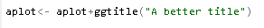

Customize Plots
keywords jamovi, plots
3.0.0
GAMLj produces several plots, whose style follows the jamovi theme. To change the plot’s theme (colors and style), one can simply modify the jamovi default theme. However, there may be instances where more substantial alterations to the plot are desired, so a different method should be used. Here, we demonstrate how to achieve this. We use GAMLj GLM as an example, but the methods outlined here can be applied to almost any plot in jamovi.
First, let’s produce a plot in GLM using the dataset
clustermanymodels in jamovi
data library.
Colors and themes
To change colors and theme of the plot, we simply go to jamovi options (the three dots icon on the upper-right corner) and select the combination that we prefer.
There are several themes to choose from
and some palettes for the colors
Here I choose Minimal theme and Greys
palettes, yielding a new plot
Labelling
Recall that to change the labels of the plots, one can simply change variables names and level names. Because jamovi poses almost no restriction to variables names, one can achieve nice labeling by choosing nice names.
For instance, in the example one can show more explicative labels for
variable cat3 by simply changing its name and level
labels.
Furthemore, in GAMLj there are a few options to change the plot and the labeling (see GLM plots help)
Advanced customization
There are cases in which one really needs to alter the plot beyond
colors and themes, or the available themes are not suitable for the
user’s purpose. For those, we need to take advantage of Rj
package, which allows to submit R code. Thanks to Rj we can
produce the plot as a ggplot2 object, that can be
manipulated with great precision. Obviously, the same code can be run in
R with any interface, such as Rstudio. Here are the steps.
- First, we need to get the syntax that produces our analysis: In
options, select
Syntax mode, go to the analysis and copy the syntax (right click on the syntax)
- Open
Rj Editor +module (install it if not already available): In the module, select the variables involved in the model and paste the syntax you just copied
Notice that we also load ggplot2 package, and save the
gamljGlm into amodel variable. Then we applied
the function plot() to the model, which returns the plot as
a ggplot object. Now, we can do all the alteration we want,
following ggplot2 command
and syntax.
Note, furthermore, that to obtain results you need to have run GAMLj command, otherwise Rj would
not find GAMLj3 package. If you get the error
simply re-run GAMLj analysis in the
user interface (just change an option and it re-runs). When you are
dealing with plots produced by jamovi
default functions, such as ANOVA or
Regression, you do not need to run the analysis before
applying these techniques.
Running the syntax, we get the same plot obtained with the interactive function (do not mind the odd proportions, we are going to fix it).
Assume now that we need to change the theme applying
ggplot2 theme_linedraw(), change the Y-axis
range, change the plot title, change the legend description and add a
red note inside the plot.
To apply a new theme, just sum it to the plot object
Then add new Y-axis limits
change the title

add the note
and change the legend description
Running the code produce the altered plot
that can be exported (righ click on the plot) and used as one wishes. Here is an example of PDF rendering.
Return to main help pages
Main page